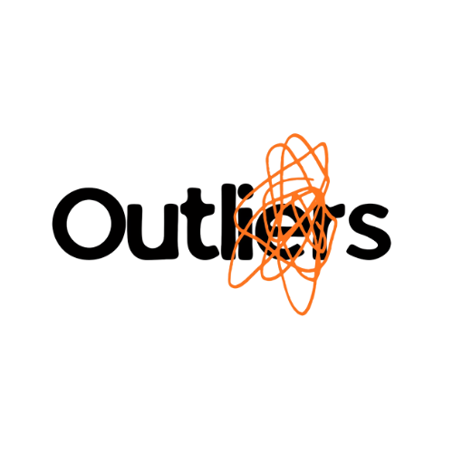
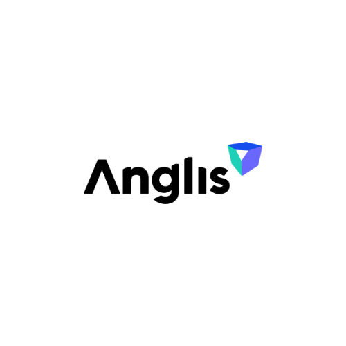

×
Este site reúne a estratégia, o posicionamento, a campanha e o modelo comercial desenvolvidos para a Anglis pelo time Outliers — da ideia apresentada à banca até a execução completa do projeto.
01 · O ponto de partida
Um segundo pode ser a diferença entre perceber e não perceber. Entre agir e chegar tarde demais.
Mas existe uma outra questão, mais difícil de resolver: como proteger alguém sem transformar proteção em vigilância?
É exatamente nesse espaço — entre o cuidado e a invasão de privacidade — que identificamos a oportunidade estratégica para a Anglis: monitorar sem transformar cuidado em vigilância.
A Anglis já possui a tecnologia: visão computacional, biorradar e inteligência artificial processados localmente, sem imagem, sem áudio. O problema não é o produto. É a comunicação.
Uma família não procura visão computacional, biorradar ou inteligência artificial. Ela procura uma forma de cuidar de quem ama quando não pode estar presente. O mercado não compra a tecnologia. Compra o valor que ela entrega.
02 · O insight estratégico
A Anglis não precisa mudar aquilo que faz. Precisa mudar o significado daquilo que faz para o mercado. Por isso, a proposta central deste projeto foi: tirar a tecnologia do centro da comunicação e colocar o cuidado.
A tecnologia continua sendo o diferencial técnico — mas passa a sustentar uma promessa muito mais fácil de entender:
Cuidado sem vigilância.
Esse é o posicionamento que atravessa todas as peças do projeto: o site, a landing page, o aplicativo e a campanha.
03 · Da comunicação para a experiência
Cenário: uma filha trabalha, mora longe do pai e precisa saber se está tudo bem. Ela não precisa acompanhar cada movimento. Ela precisa saber quando alguma coisa exige atenção.
É isso que o aplicativo Anglis transforma em experiência: em vez de mostrar tudo, ele organiza os dados e destaca apenas mudanças relevantes na rotina e situações que realmente precisam de atenção.
O aplicativo transforma monitoramento em informação útil para o cuidado.
04 · As três frentes de execução
Site institucional pensado a partir da necessidade real do consumidor (não da tecnologia), otimizado com SEO, estruturado em: Como Funciona, O Dispositivo, Privacidade, Sobre Nós, Planos e FAQ.
Conteúdo e influenciadores traduzindo a tecnologia em situações reais de cuidado — histórias, não especificações técnicas.
O maior desafio: como demonstrar uma tecnologia que trabalha justamente sem imagens? A resposta foi a campanha Cada Segundo Conta.
05 · A campanha
Hashtag oficial: #CadaSegundoConta
Lançamento de "O Segundo que Mudou Tudo": um documentário contando histórias reais de famílias em que poucos segundos fizeram diferença. Prepara o terreno emocional antes da ativação física.
O CareCube foi levado para a rua, com um telão exibindo um timer regressivo — a atenção não pode falhar. Na ativação, a pessoa podia simular uma situação de risco e acompanhar os próprios dados sendo monitorados em tempo real. Sem câmera. Sem exposição.
#CadaSegundoConta convida as pessoas a compartilharem suas próprias histórias de cuidado, construindo uma única narrativa coesa para a marca entre a rua e o digital.
O dilema do cuidado
06 · A jornada do lead
A atenção gerada pela ativação não é o objetivo final — é o ponto de entrada de uma jornada estruturada:
Essa jornada foi desenhada ponta a ponta: da rua (ativação física) ao fechamento comercial.
07 · O modelo comercial
A estratégia não abandona o modelo B2B (instituições, casas de repouso), mas abre uma nova porta de entrada. Para isso, foram estruturados três níveis de cobertura, permitindo diferentes necessidades e pontos de entrada:
| Plano | Ambientes | Perfil |
|---|---|---|
| Anglis Base | 3 ambientes | Entrada, cobertura dos pontos de maior risco |
| Anglis Cuidado | 6 ambientes | Cobre a casa inteira na maioria dos casos — plano mais escolhido |
| Anglis 360 | 10 ambientes | Casas grandes e instituições |
Todos os planos incluem: instalação profissional, app para toda a família, alertas em tempo real, suporte e manutenção, flexibilidade para ampliar/reduzir/suspender a cobertura.
Essa estrutura de planos gera uma nova oportunidade de aquisição de clientes que antes não existia no modelo puramente B2B.
08 · Investimento e métricas
Objetivo: captura de leads qualificados. Indicador principal: CPL (Custo por Lead).
Objetivo: conversão. Indicador principal: CAC (Custo de Aquisição de Cliente).
O evento constrói a base. O digital desenvolve o relacionamento. O funil transforma esses contatos em clientes.
A visão por trás do projeto
Esta proposta não se resume a um app, um site ou uma campanha isolada. Ela representa uma transformação na forma como a Anglis chega ao mercado.
A solução não termina no monitoramento. O verdadeiro valor da Anglis está no que ela devolve às pessoas: o tempo de viver mais com quem você ama.